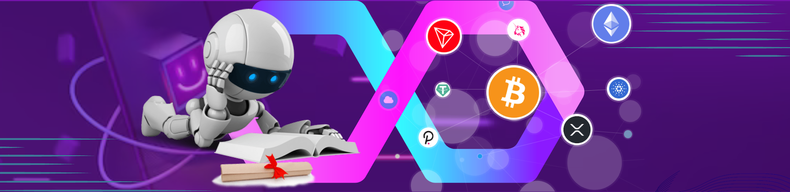

Το 123 Steps των Metadudes σχεδιάστηκε ώστε κάποιος που δεν έχει ασχοληθεί ποτέ ξανά με τα κρυπτονομίσματα ή έχει ασχοληθεί ελάχιστα, να βρει τις πληροφορίες που ψάχνει! Επίσης, εδώ θα βρείτε τα απαραίτητα links για όλες τις σημαντικές σελίδες που θα επισκευθείτε!
Πάνω από όλα στην ελληνική γλώσσα και με απλά λόγια.
STEP 1 (Eισαγωγή)
Bitcoin
EΡΩΤΗΣΗ:
-Δεν είναι μόνο το Bitcoin? Πως δουλεύει η τεχνολογία του blockchain τελικά;ΑΠΑΝΤΗΣΗ:
-Όχι, δεν είναι όλα τα κρυπτονομίσματα “Bitcoin”! Στον παρακάτω σύνδεσμο έχουμε αρκετά βιντεάκια μικρού μήκους που εξηγούν με απλά λόγια πολλές διαφορετικές τεχνολογίες των κρυπτονομισμάτων! -> Κρυπτονoμίσματα βήμα βήμαMetadudes Library
EΡΩΤΗΣΗ:
-Δεν μου αρκούν αυτές οι πληροφορίες, έχω κι άλλες απορίες! Υπάρχει κάποιος τρόπος να αντλήσω πληροφορίες για τις ερωτήσεις που έχω πάνω στον κόσμο των κρυπτονομισμάτων;ΑΠΑΝΤΗΣΗ:
-Ο απόλυτος τρόπος να κορεστει η δίψα για γνώση, ειναι μόνο με το MetaGo Library των Metadudes! Η συγκεκριμένη σελίδα είναι μία βιβλιοθήκη πληροφοριών πάνω στις τεχνολογίες των κρυπτονομισμάτων. Τα θέματα είναι χωρισμένα σε κατηγορίες και σε επίπεδο γνώσεων. Όλες οι πληροφορίες είναι δωρεάν και στα Ελληνικά! Το μόνο που χρειάζεται να κάνεις για να έχεις πρόσβαση στη βιβλιοθήκη, είναι να κάνεις σύνδεση στον Discord Server των Metadudes. Ο σύνδεσμος που θα σε οδηγήσει στο MetaGo Library των Metadudes είναι εδώ -> Metago.grΕγγραφη σε ανταλλακτηριο
EΡΩΤΗΣΗ:
-Ωραία όλα αυτά (αν και μου φαίνονται κινέζικα), αλλά θέλω να κάνω την πρώτη μου αγορά κρύπτο! Πως θα το κάνω αυτό;ΑΠΑΝΤΗΣΗ:
-Εύκολα! Αρχικά πρέπει να κάνεις λογαριασμό σε ένα ανταλλακτήριο ώστε να μπορέσεις να στείλεις χρήματα και να τα μετατρέψεις σε κρύπτο. Εμείς προτείνουμε την Bybit και αν κάνεις εγγραφή από το σύνδεσμο μας, θα έχεις χαμηλότερα τέλη συναλλαγών και πρόσβαση σε προσφορές που θα δίνονται μόνο στους Metadudes!Κάνε εγγραφή από εδώ: Bybit Sign up
-Για να έχεις όλα τα προνόμια και για την ασφάλεια του λογαριασμού σου, θα πρέπει να ολοκληρώσεις τουλάχιστον το KYC1. Θα χρειαστεί να έχεις διαθέσιμη την ταυτότητα σου, το διαβατήριο σου ή την άδεια οδήγησης σου. Φήμες λένε πως και με την εφαρμογή Gov.gr Wallet, μπορείς να ολοκληρώσεις τη διαδικασία!
STEP 2 (Desktop)
Αγορα Crypto (easy mode)
EΡΩΤΗΣΗ:
-Ολοκλήρωσα το KYC. Πως προχωράω;ΑΠΑΝΤΗΣΗ:
Το επόμενο βήμα είναι να αγοράσεις κρύπτο μέσα από το ανταλλακτήριο. Ο πιο εύκολος τρόπος είναι απευθείας, μέσω χρεωστικής κάρτας.1) Στο μενού που βρίσκεται στην πάνω μπάρα, στα αριστερά πάμε στην κατηγορία “Buy Crypto” και επιλέγουμε “One-Click Buy”.
2) Στα δεξιά της οθόνης εμφανίζει μία καρτέλα, όπου στο πάνω μέρος επιλέγουμε το νόμισμα από το οποίο θα γίνει η αγορά και ακριβώς από κάτω επιλέγουμε το νόμισμα στο οποίο θέλουμε να μετατραπούν άμεσα τα χρήματα μας. Προτείνω σαν πρώτη αγορά το “ETH”, καθώς θα το χρησιμοποιήσουμε και σε επόμενα βήματα αυτού του οδηγού.
3) Στο πλαίσιο που βρίσκεται το “EUR” γράφουμε ότι ποσό θέλουμε και θα μας εμφανίσει αυτόματα σε πόσα “ETH” αντιστοιχούν εκείνη τη στιγμή τα χρήματα σας. Μόλις είμαστε ικανοποιημένοι με τη συναλλαγή που βλέπουμε, πατάμε κάτω από το “Payments Methods” (“EUR Balance”) και επιλέγουμε “Bank Card”.
4) Θα εμφανίσει το κουμπί “Add Card” και πατώντας το θα μας ζητήσει να προσθέσουμε τα στοιχεία της κάρτας που θα χρησιμοποιήσουμε.
5) ΜΕΓΑΛΗ ΠΡΟΣΟΧΗ! Όχι μόνο στην Bybit, αλλά και σε οποιαδήποτε μέσο που χρησιμοποιούμε και είναι συνδεδεμένο με το διαδίκτυο, προσέχουμε πάρα πολύ τι στοιχεία δίνουμε. Κατά προτίμηση χρησιμοποιούμε μία κάρτα σε όλες τις συναλλαγές, η οποία δεν έχει πολλά χρήματα μέσα και ιδανικά, είναι μόνιμα “παγωμένη” ώστε να "ξεπαγώνεται" μόνο όταν είναι να τη χρησιμοποιήσετε εσείς.
6) Στο τελευταίο μέρος της διαδικασίας, σας εμφανίζει όλες τις πληροφορίες της συναλλαγής που πρόκειται να πραγματοπποιηθεί. Κάνετε κλικ στο ότι διαβάσατε τους όρους και τις προϋποθέσεις και ότι τα αποδέχεστε (εννοείται ότι αν θέλετε και καλό είναι να τα διαβάσετε) και στη συνέχεια πατάτε στο “Confirm”.
Συγχαρητήρια! Μόλις αποκτήσατε τα πρώτα σας κρυπτονομίσματα στην Bybit!
Αγορα Crypto (like a pro)
EΡΩΤΗΣΗ:
-Ολοκλήρωσα το KYC. Υπάρχει τρόπος να επενδύσω σε κρυπτονομίσματα με λιγότερα έξοδα;ΑΠΑΝΤΗΣΗ:
Αν έχεις κατεβασμένη την εφαρμογή “Revolut” μπορείς να χρησιμοποιήσεις έναν άλλο τρόπο επένδυσης σε κρυπτονομίσματα, μεταφέροντας απευθείας ευρώ από τη Revolut στην Bybit. Έχει πολύ μικρή εφάπαξ χρέωση και μεταφέρονται σχεδόν άμεσα τα χρήματα σας στο ανταλλακτήριο. Να σημειώσω εδώ, πως με αυτήν τη διαδικασία ουσιαστικά δίνουμε τη δικαιοδοσία στη Bybit να τραβήξει τα χρήματα από την Revolut.1) Στο μενού που βρίσκεται στην πάνω μπάρα, στα αριστερά πάμε στην κατηγορία “Buy Crypto” και επιλέγουμε “Fiat Deposit”.
2) Στα δεξιά της οθόνης εμφανίζει μία καρτέλα, όπου στο πάνω μέρος γράφουμε την ποσότητα των χρημάτων που θέλουμε να κάνουμε κατάθεση και ακριβώς από κάτω επιλέγουμε το “Easy Bank Payment” και “Continue”.
3) Στην επόμενη οθόνη επιλέγουμε “Estonia” στη χώρα και “Revolut” στη τράπεζα. Γράφουμε το IBAN που έχουμε στη Revolut και πατάμε “Next”.
4) Στο επόμενο βήμα μας δείχνει όλες τις πληροφορίες της συναλλαγής που θα γίνει.
5) Κάνουμε κλικ στο ότι διαβάσαμε τους όρους και τις προϋποθέσεις και ότι τα αποδεχόμαστε (εννοείται ότι αν θέλετε και καλό είναι να τα διαβάσετε) και στη συνέχεια πατάμε στο “Continue”.
6) Μετά από εκείνο το σημείο μας καθοδηγεί η εφαρμογή, ώστε να μεταφέρουμε τα χρήματα που δηλώσαμε στη Bybit!
STEP 2 (Mobile)
Αγορα Crypto (easy mode)
EΡΩΤΗΣΗ:
-Ολοκλήρωσα το KYC. Πως προχωράω;ΑΠΑΝΤΗΣΗ:
Το επόμενο βήμα είναι να αγοράσεις κρύπτο μέσα από το ανταλλακτήριο. Ο πιο εύκολος τρόπος είναι απευθείας, μέσω χρεωστικής κάρτας.1) Στη αρχική σελίδα επιλέγουμε “Deposit/Buy with Fiat” που βρίσκεται στο πάνω μέρος της οθόνης και στη συνέχεια πατάμε “Buy with EUR”.
2) Στην οθόνη που θα μας εμφανιστεί, πατάμε πάνω δεξιά στο σημείο που γράφει “USDT” και επιλέγουμε από τα “Recommend” το “ETH”.
3) Στο κύριο μέρος της οθόνης (που αναγράφεται το “0 EUR”) γράφουμε το ποσό που θέλουμε να επενδύσουμε και πατάμε “Next”.
4) Επιλέγουμε “Bank Card”. Θα εμφανίσει το κουμπί “Add Card” και πατώντας το θα μας ζητήσει να προσθέσουμε τα στοιχεία της κάρτας που θα χρησιμοποιήσουμε.
5) ΜΕΓΑΛΗ ΠΡΟΣΟΧΗ! Όχι μόνο στη Bybit, αλλά και σε οποιαδήποτε μέσο που χρησιμοποιούμε και είναι συνδεδεμένο με το διαδίκτυο, προσέχουμε πάρα πολύ τι στοιχεία δίνουμε. Κατά προτίμηση χρησιμοποιούμε μία κάρτα σε όλες τις συναλλαγές, η οποία δεν έχει πολλά χρήματα μέσα και ιδανικά είναι μόνιμα “παγωμένη” ώστε να “ξεπαγώνεται” μόνο όταν είναι να τη χρησιμοποιήσετε εσείς
6) Στο επόμενο βήμα σας δείχνει όλες τις πληροφορίες της συναλλαγής που θα γίνει.
7) Κάνετε κλικ στο ότι διαβάσατε τους όρους και τις προϋποθέσεις και ότι τα αποδέχεστε (εννοείται ότι αν θέλετε και καλό είναι να τα διαβάσετε) και στη συνέχεια πατάτε στο “Confirm”.
Συγχαρητήρια! Μόλις αποκτήσατε τα πρώτα σας κρυπτονομίσματα στη Bybit!
Αγορα Crypto (like a pro)
EΡΩΤΗΣΗ:
-Ολοκλήρωσα το KYC. Υπάρχει τρόπος να επενδύσω σε κρυπτονομίσματα με λιγότερα έξοδα;ΑΠΑΝΤΗΣΗ:
Αν έχεις κατεβασμένη την εφαρμογή “Revolut” μπορείς να χρησιμοποιήσεις έναν άλλο τρόπο επένδυσης σε κρυπτονομίσματα, μεταφέροντας απευθείας ευρώ από τη Revolut στην Bybit. Έχει πολύ μικρή εφάπαξ χρέωση και μεταφέρονται σχεδόν άμεσα τα χρήματα σας στο ανταλλακτήριο. Να σημειώσω εδώ, πως με αυτήν τη διαδικασία ουσιαστικά δίνουμε τη δικαιοδοσία στη Bybit να τραβήξει τα χρήματα από την Revolut.1) Στη αρχική σελίδα επιλέγουμε “Deposit/Buy with Fiat” που βρίσκεται στο πάνω μέρος της οθόνης και στη συνέχεια πατάμε “Buy with EUR”.
2) Στην οθόνη που θα μας εμφανιστεί τέρμα πάνω γράφει “One-Click Buy”. Το πατάμε και το αλλάζουμε σε “Fiat Deposit”.
3) Στο πάνω μέρος γράφουμε την ποσότητα των χρημάτων που θέλουμε να κάνουμε κατάθεση και ακριβώς από κάτω επιλέγουμε το “Easy Bank Payment”, κάνετε κλικ στο ότι διαβάσατε τους όρους και τις προϋποθέσεις και ότι τα αποδέχεστε (εννοείται ότι αν θέλετε και καλό είναι να τα διαβάσετε) και μετά “Continue”.
4) Στην επόμενη οθόνη επιλέγουμε “Estonia” στη χώρα και “Revolut” στη τράπεζα. Γράφουμε το IBAN που έχουμε στη Revolut και παλι αποδεχόμαστε τους όρους και τις προϋποθέσεις και “Continue”.
5) Στο επόμενο βήμα σας δείχνει όλες τις πληροφορίες της συναλλαγής που θα γίνει και αν συμφωνείτε πατάτε “Pay”.
6) Μετά από εκείνο το σημείο σας καθοδηγεί η εφαρμογή, ώστε να μεταφέρετε τα χρήματα που δηλώσατε στη Bybit!
STEP 3 (Αποκέντρωση)
Not your keys…
EΡΩΤΗΣΗ:
…not your crypto? Δηλαδή, τα κρυπτονομίσματα που μόλις αγόρασα, δεν μου ανήκουν; Πως μπορώ να έχω εγώ την πλήρη κυριότητα τους;ΑΠΑΝΤΗΣΗ:
-Στα κρύπτο πρέπει να ξεχωρίσουμε τις κεντροποιημένες οντότητες σε σχέση με τις αποκεντρωμένες. Στην πρώτη κατηγορία δεν έχουμε εμείς έλεγχο των χρημάτων μας αλλά μία εταιρία, ενώ στη δεύτερη κατηγορία, πρόσβαση έχουμε μόνο εμείς.-Μία κεντροποιημένη εφαρμογή είναι η Bybit, ενώ μια αποκεντρωμένη είναι το Metamask. Την εφαρμογή Metamask μπορείτε να την κατεβάσετε στο κινητό ή να την εγκαταστήσετε στο browser της αρεσκείας σας. Στέλνοντας στο Metamask τα κρυπτονομίσματα σας, εσείς έχετε πλέον την πλήρη κυριότητα τους.
Σημείωση: Το Metamask δεν υποστηρίζει όλων των ειδών τα κρυπτονομίσματα.
Metamask (Desktop)
EΡΩΤΗΣΗ:
Πως εγκαθιστώ το Metamask?ΑΠΑΝΤΗΣΗ:
-Αρχικά, να πούμε πως το Metamask είναι ένα hot πορτοφόλι. Αυτό σημαίνει ότι το πορτοφόλι είναι εκτεθειμένο στο διαδίκτυο και καλό είναι να είστε προσεκτικοί όταν το χρησιμοποιείτε. Προς το παρόν δεν χρειάζεται να ανησυχείτε ή να κάνετε κάτι γι’ αυτό. Αν θέλετε όμως περισσότερες πληροφορίες γύρω από την ασφάλεια των πορτοφολιών, ελάτε εδώ -> Προστασία στον χώρο του Web3.0 (Μέρος 1ο)και μετά εδώ -> Προστασία στον χώρο του Web3.0 (Μέρος 2ο)
-Το Metamask είναι self-custody, δηλαδή εμείς είμαστε υπεύθυνοι για τα χρήματα μας και την ασφάλεια τους, με αντάλλαγμα την ιδιωτικότητα μας. Για τη δημιουργία του πορτοφολιού δεν χρειάζεται να δηλώσουμε αριθμό κινητού, διεύθυνση ή οποιοδήποτε προσωπικό στοιχείο!
1. Απαντώντας (επιτέλους) στο ερώτημα μας, για την εγκατάσταση σε υπολογιστή μπαίνουμε στην επίσημη ιστοσελίδα του Metamask -> Metamask download και επιλέγουμε να εγκαταστήσουμε την εφαρμογή, ανάλογα τον browser που χρησιμοποιούμε. Το Metamask είναι extension (επέκταση) του browser και όχι ξεχωριστή εφαρμογή κι έτσι δεν υποστηρίζεται από όλους τους browsers.
2. Στη σελίδα με τις επεκτάσεις, επιβεβαιώνουμε ότι είναι η σωστή εφαρμογή, βλέποντας ότι έχει πάνω από 10.000.000 χρήστες.
3. Στην αρχή της εγκατάστασης επιλέγουμε να δημιουργήσουμε ένα νέο πορτοφόλι, αποδεχόμαστε ότι μας ζητήσει και στη συνέχεια δημιουργούμε τον κωδικό πρόσβασης της εφαρμογή.
4. Στην επόμενη οθόνη θα μας δώσει δύο επιλογές. Όπως συνιστά και η ίδια η εφαρμογή, επιλέξτε να προστατέψετε το πορτοφόλι, τώρα!
5. Το σημείο αυτό της εγκατάστασης, είναι το σημαντικότερο πράγμα που κάνουμε πάντα στην ενασχόληση μας με τα κρυπτονομίσματα! Είναι η αποθήκευση της μυστικής φράσης ανάκτησης του πορτοφολιού μας (seed phrase)! Θα εμφανιστούν οι 12 (ή 24) λέξεις κλειδιά, τις οποίες φροντίζουμε να τις αποθηκεύσουμε σε μη ηλεκτρονική μορφή και μακριά από αδιάκριτα μάτια!
6. Θα μας ζητήσει να επιβεβαιώσουμε ότι έχουμε κρατήσει τη μυστική φράση ζητώντας μας να συμπληρώσουμε τις λέξεις που λείπουν και αφού το κάνουμε, ουσιαστικά έχουμε τελειώσει με την εγκατάσταση του Metamask!
-Θα σας ζητήσει να ενεργοποιήσετε τις ειδοποιήσεις ασφαλείας, κάτι το οποίο είναι σημαντικό να το κάνετε.
-Υπάρχουν ακόμα μερικά πράγματα που θα πρέπει να κάνουμε στο μέλλον για να είναι πλήρως λειτουργικό, αλλά για μία βασική χρήση, είμαστε πανέτοιμοι!
-Όπως έχουμε επισημάνει και σε άλλα σημεία του οδηγού, καλό είναι να διαβάζουμε τους όρους και τις προϋποθέσεις κάθε προγράμματος που εγκαθιστούμε, καθώς και όποιες σημαντικές πληροφορίες μας δίνουν
Αποστολη Crypto (Desktop)
EΡΩΤΗΣΗ:
Πως στέλνω κρυπτονομίσματα από τη Bybit στο Metamask μου;ΑΠΑΝΤΗΣΗ:
-Το Metamask, στο βασικό του δίκτυο (που είναι το Ethereum Network) υποστηρίζει το $ETH, κρυπτονομίσματα τύπου ERC-20 και NFTs. Για να κρατήσουμε τον οδηγό απλό, θα περιγράψουμε πως μπορούμε να στείλουμε Ethereum από την Bybit στο Metamask μας.1. Μέσω υπολογιστή και ενώ βρισκόμαστε μέσα στην εφαρμογή της Bybit, αν μετακινήσουμε τον κέρσορα μας πάνω δεξιά εκεί που γράφει “Assets”, θα ανοίξει ένα μενου και εκεί επιλέγουμε το “Withdraw”.
2. Θα μας οδηγήσει στο Wallet Overview και εμείς πάλι θα επιλέξουμε το “Withdraw” που βρίσκεται πάνω δεξιά, κάτω όμως από την μπάρα επιλογών. Θα μας ανοίξει ένα pop up window και εκεί θα πρέπει να κάνουμε κάποιες επιλογές.
3. Στο πρώτο πεδίο επιλέγουμε ETH (Ethereum). Στο δεύτερο πεδίο πρέπει να γράψουμε τη διεύθυνση (Public Address) που έχουμε στο Metamask. Εννοείται ότι δεν θα γράψουμε ένα-ένα ψηφίο, αλλά θα αντιγράψουμε τη διεύθυνση.
4. Για να βρούμε τη διεύθυνση που θέλουμε να στείλουμε τα Ethereum μας, πατάμε πάνω δεξιά στο browser μας, στο εικονίδιο του Metamask.
5. Όταν ανοίξει, ψηλά και στο κέντρο της εφαρμογής, μέσα σε ένα οβάλ πλαίσιο με μπλε γράμματα αναγράφεται η διεύθυνση που πρέπει να αντιγράψουμε. Για τη δική μας ευκολία, ακριβώς από δίπλα υπάρχει το εικονίδιο της “αντιγραφής” (δύο τετράγωνα, το ένα πίσω από το άλλο), οπότε το πατάμε και είμαστε έτοιμοι να το αντιγράψουμε στη Bybit.
6. Επικολλούμε τη διεύθυνση στο αντίστοιχο πεδίο (δεύτερο) στη Bybit και στο τρίτο πεδίο επιλέγουμε “ERC20”. Είναι το δίκτυο μέσω του οποίου θα στείλουμε τα Ether μας. Προσοχή σε αυτό το σημείο. Όταν κάνετε την αντιγραφή της διεύθυνσης, επαληθεύστε ότι έγινε σωστά!
7. Παρακάτω επιλέγουμε από ποιο πορτοφόλι της Bybit θέλουμε να στείλει τα κρυπτονομίσματα μας (συνήθως είναι στο Spot) και την ποσότητα που θέλουμε να στείλουμε.
8. Κάτω αριστερά στο ίδιο πλαίσιο, μας πληροφορεί πόσο θα κοστίσει η μεταφορά και αν είμαστε ικανοποιημένοι πατάμε στο “Submit”.
9. Ανάλογα το επίπεδο ασφαλείας που έχουμε διαμορφώσει στην εφαρμογή, θα μας ζητήσει επιβεβαίωση μέσω email, κινητού και Google Authenticator.
10. Μόλις ολοκληρώσετε και αυτά τα βήματα, η αποστολή των κρυπτονομισμάτων σας είναι απλώς θέμα χρόνου να ολοκληρωθεί.
-Να σημειώσουμε εδώ πως αυτό που κάναμε είναι ουσιαστικά μία αίτηση στο ανταλλακτήριο, ώστε να μας στείλει τα χρήματα μας. Αν δεν εγκρίνει την αίτηση η Bybit, δεν προχωράει η διαδικασία στο blockchain. Δεν έχουμε συναντήσει ποτέ πρόβλημα με την Bybit, απλώς ξεκαθαρίζουμε ότι αυτή η διαδικασία δεν είναι συναλλαγή πάνω στο blockchain, αλλά μία αίτηση σε μία κεντροποιημένη οντότητα.
-Υπό φυσιολογικές συνθήκες, σε 15 λεπτά από τη στιγμή της αίτησης, τα κρυπτονομίσματα θα βρίσκονται στη διεύθυνση του Metamask σας.
+STEPS (Crypto-Connection)
X (Twitter)
EΡΩΤΗΣΗ:
Με ποιον τρόπο μαθαίνω, με τον γρηγορότερο δυνατό τρόπο, τα νέα των κρυπτονομισμάτων;ΑΠΑΝΤΗΣΗ:
-Εάν σε ενδιαφέρει να μαθαίνεις άμεσα ό,τι συμβαίνει στα κρύπτο, τότε η πλατφόρμα που πρέπει να χρησιμοποιήσεις, είναι το Χ! Είναι ο πιο άμεσος και γρήγορος τρόπος, καθώς με αυτό το μέσο επικοινωνούν τις εξελίξεις οι επενδυτές και οι δημιουργοί. Αν δεν έχεις Χ, τότε σου συνιστώ να δημιουργήσεις ένα λογαριασμό και να μας ακολουθήσεις εδώ -> Metadudes X (Twitter)Discord
EΡΩΤΗΣΗ:
Ωραίο το “Χ”, αλλά εκεί οι πληροφορίες είναι χαοτικές! Υπάρχει κάποιο μέρος που να μπορώ να μάθω τις σημαντικότερες ειδήσεις και πληροφορίες, σε απλά ελληνικά;ΑΠΑΝΤΗΣΗ:
-Φυσικά και υπάρχει και δεν είναι άλλο, από τους Metadudes! Μέσα στον Discord Server μας θα βρεις ότι πληροφορίες χρειάζεσαι, όσον αφορά τα κρυπτονομίσματα και μία κοινότητα έτοιμη να βοηθήσει σε όποιο πρόβλημα συναντήσεις! Χρησιμοποίησε αυτόν τον σύνδεσμο για να συνδεθείς μαζί μας -> Metadudes Discord Server Scroll To Top
Scroll To Top